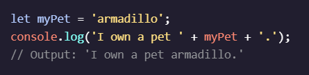
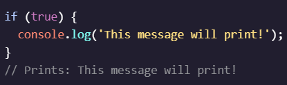
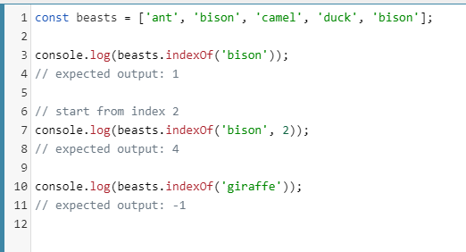
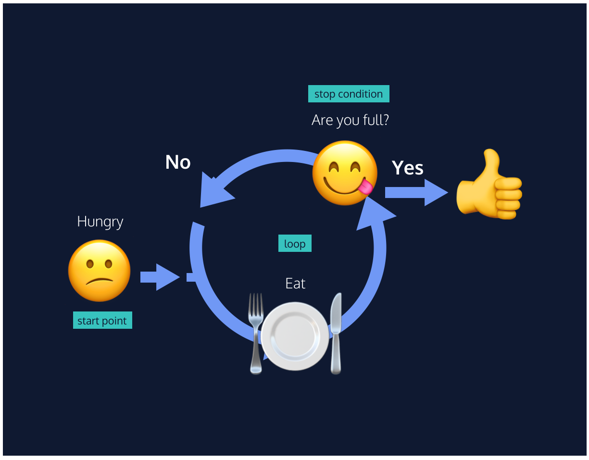
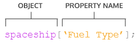
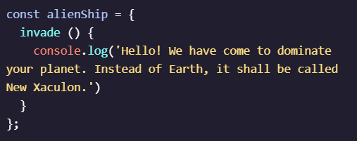
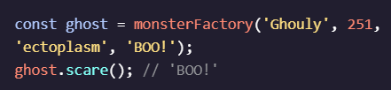
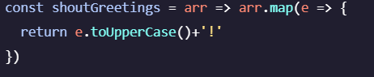

Javascript
08.06.2021
#js
-
{ "compilerOptions": { "module": "commonjs", "target": "es6" }, "exclude": ["node_modules", "**/node_modules/*"] }- to wpisujemy jako config do jsconfig.json -
console - terminal, przestrzeń niewidzialna dla użytkownika, do której można wpisać różne przetwarzane wartości, służy do debugowania i testowania kodujavascript jest case sensitive - co oznacza, ze ma znaczenie wielkość wpisywanych liter, co innego jest Time i TIME -
.log() - wyświetla zawartość nawiasu w konsoliconsole.log(2021); ' ' - string, pozwala wpisać do konsoli słowa i wartości mieszane, umieszczone pomiedzy apostrofamiconsole.log('michaś jest kochany'); -
comments - pomocne przy tworzeniu kodu, pomaga zrozumiec innym nasz kod, ale i nam samym po dluzszym czasie// komentarz - pojedyncza linijka, krótki komentarz/* komentarz */ - dłuzszy, wielowierszowy komentarz, można go również używać, zeby wtrącić komentarz w środku kodu i on nadal był interaktywny, lub odwrotnie, aby wyłączyć część kodu, ale jej nie usuwać
-
data types - rodzaje danych pojawiajacych się w javascript:cyfry - 1, 2, 786...stringi - 'kupa nie pachnie', '234 to hasło', '2+3=8'boolean - daje wartości true/false, jak włącznik on/off na pilocienull - brak wartości, celowy zabiegundefined - tak jak null to wyraz braku danych, ale działa inaczejsymbol - nowy ficzer js, jakieś strzałki itd, do uzupełnieniaobject - zbiór złożonych danych, do uzupełnienia
/' - jeśli w stringu musimy zwrzeć apostrof, to przed nim dajemy slash, który nie bedzie widoczny w konsoli, inaczej mozemy użyć zewnetrznych cudzysłowow, zeby kod rozumiał ocb -
Arithmetic Operators - znaki pozwalające na dokonywanie szybkich operacji na liczbach+ - / * console.log(3 + 4); // Prints 7 console.log(4 * 2); // Prints 8 console.log(9 / 3); // Prints 3 % - remainder operator, modulo - wyświetla resztę z dzieleniaconsole.log(11 % 3); - w jedenastce mieszczą się trzy trójki (3x3=9) a reszta to 2 (11-9=2). - dot operator -
dodawanie stringów - operator + można również wykorzystywac do łączenia wielu stringów w jedenconsole.log('hi' + 'ya'); // Prints 'hiya' console.log('One' + ', ' + 'two' + ', ' + 'three!'); // Prints 'One, two, three!' -
properties - właściwości danego stringa, pozwala wyciagnąć inne informacje o danym obiekcie, np jego długość znakowąconsole.log('Hello'.length); // Prints 5 - wyświetla 5, bo ten string składa się z 5 liter -
methods - funkcje, pozwalające na wykonywanie bardziej złożonych operacji, składają się z dot operatora. , nazwy funkcjilog i nawiasu() np. .log()console.log('hello'.toUpperCase()); // Prints 'HELLO' console.log('Hey'.startsWith('H')); // Prints true -
przykłady methods: .trim() - usuwa spacje przed i po.toUpperCase() - zmienia tekst na capsa.toLowerCase() - odwrotnie.startsWith('x') - sprawdza, czy string zaczyna sie od znaku/znaków w nawiasie.repeat(123) - powtarza string razy liczba w nawiasie.replace(searchFor, replaceWith) - wyszukuje i zamienia jedno na drugie
Methods - String MDN
-
Built-in Objects - narzędzia już wbudowane w javascript, których mozemy używac po wywołaniu, zawierają już swoje methodsyMath - do działań matematycznych
Mathconsole.log(Math.random()); // Prints a random number between 0 and 1) console.log(Math.random() * 50) - wyświetla losową liczbę między 0 i 50 mnożąc pierwotny wynik, ale zostaja wartosci po przecinkuMath.floor() - bierze liczbę i zaokrągla do dolnej wartości całkowitejMath.ceil() - zaokrągla do górnej wartości całkowitejMath.round() - też zaokrągla, ale zgodnie z regułami zoakrąglaniaconsole.log(Math.round(Math.random() * 50)) - poprawiona wersja wczesniejszego, zaokraglajaca do całkowitych dzieki Math.round
Number - do operowania liczbami
NumberNumber.isInteger() - sprawdza, czy liczba jest całkowita
Variables
08.06.2021
#js
-
variable - miejsce na wartość, pudełko na dane w pamięci komputera, np. login i hasło, mają swoje nazwy dla łatwiejszego rozrózniania, wartości te moga być aktualizowane i pobierane w celu wykorzystania w innych funkcjachvariable to nie value - one tylko przechowują value, a nie są tożsame -
var - pozwala na tworzenie variables, pierwotne narzędzie, obecnie są jeszcze dwa innevar myName = 'Michor'; - tworzy zmienną myName o wartości 'Michor'console.log(myName); - wyświetli 'Michor'
nazwy zmiennych nie mogą:
- zaczynać się od liczb
- być pisane raz dużą raz małą literą, bo to dwie różne wartości w js
- być nazwane jak zarezerwowane keywordsy np. break, else, for, if, new, export, super, return, switch, try, this
Keywords -
let - nowa funkcja pozwalajaca na tworzenie variable, obecnie powszechnie uzywana kosztemvar  Jeśli nie podamy wartości dla zmiennej, to przyjmie ona wartość
Jeśli nie podamy wartości dla zmiennej, to przyjmie ona wartość undefined -
const - constant - pozwala na tworzenie variable, które nie mogą być zmienione, przy próbie zmiany wynikiem będzie błąd TypeErrorconst myName = 'Gilberto'; wartośc const musi byc ustalona przy tworzeniu - jeśli jej nie zadeklarujemy, wtedy błąd SyntaxError operatory matematyczne - pozwalają dodawać, odejmować, dzielić i mnożyć wartości do zmiennych - tworzy zmienną 'w' i dodaje do niej +1 - to samo tylko z użyciem skrotowego operatora+= -
assignment operators - skrótowe operatory, pozwalające na szybszy zapisw += 1 - zastępujew = w+1 a -= 2 - zastępujea = a-2 y *= 3 zastepujey = y*3 k /= 5 zastępujek = k/5 -
increment/decrement operator - pozwalają na szybką zmiane wartości o jeden++ - dodaje 1 do wartości zmiennej-- - odejmuje 1 od wartości zmiennej
-
dodawanie zmiennych i stringów  -
String Interpolation - inna metoda zapisu dodawania zmiennych i stringów, pozwala na pisanie stringów o wielowierszowej strukturze i kopiowanie ich z preformatowanego tekstu, szybszy i czytelniejszy zapislet myName = 'Michor' let myCity = 'Gdansk' console.log(`My name is ${myName}. My favorite city is ${myCity}`) ` ` - treść wewnątrz totemplate literal 
-
typeof - operator umożliwiający sprawdzenie rodzaju danych zapisanych w zmiennejPrzykład zastosowania:
Conditional Statements
09.06.2021
#js
-
conditional statements - warunkowe, logiczne zapytania, decydujące o wyborze opcji stosowanej przez program, pytania typu -czy? jeśli?
Semicolon Guide ;;; -
if - jeżeli - pytanie o warunek do spełnienia, aby podjąc jakąś akcję, w pytaniach binarnych typu "tak czy nie?" (true/false) - parentheses, warunek do spełnienia równy wartości true lub false{ } - jeśli warunek zostanie spełniony (true), to kod umieszczony w nawiasie { ### } zostanie wykonany, jeśli nie to nic sie nie dzieje -
else - pozwala podjąc akcję, jezeli warunek zif nie zostanie spełniony i przyjmie wartosc false, musi być zawsze połączony z ifem, razem tworzą paręif...else nie wymaga dodatkowego (parentheses) - tylko kod do wykonania w {nawiasach} -
comparison operators - porównanie na zasadzie wielkości lub równania do czegoś> - większe niż< - mniejsze niż>= - większe lub równe<= - mniejsze lub równe=== - równe z (do porównywania liczb i słów) identity operator!== - nie jest równe10 < 12 - czy 10 jest mniejsze od 12? tak, a więc równa się wartościtrue 'jabłka' === 'pomarańcze' czy string 'jabłka' równa się stringowi 'pomarańcze?' - nie, a więc wartośc tofalse 
-
logical operators - operatory pozwalające składać bardziej złożone, kilkuczynnikowe warunki&& - and/i operator - obydwa warunki muszą być spełnione na true, jeśli chociaż jeden z nich jest false, to zostanie wykonany kod z operatora else
| | - or/lub operator - jeden z warunków musi być spełniony na true, aby całe twierdzenie było true i wykonac kod operatora if, jeśli pierwszy warunek jest true, to następny nie jest nawet sprawdzany! - not/bang/nie operator - odwraca znaczenie booleana, jeśli było true, to daje false, troche co innego niż powyższe operatory
-
truthy / falsy - kiedy chcemy sprawdzić, czy wartość zmiennej nie jest pusta, niezerowa, czy ma jakąkolwiek wartosc do siebie przypisaną, możemy umieścić ją w pytaniuif i jeśli ma coś w sobie, to zwróci wartośćtruthy >truth , jeśli jednak będzie zerowa, to zwróci wartośćfalsy >false
wartości zerowe (falsy):0 - zero'' "" - pusty stringnull - brak jakiekolwiek wartościundefined - brak zadeklarowanej wartości zmiennejNaN - not a number
-
truthy / falsy assignment - pozwala przypisywać zmiennym wartości w oparciu o sprawdzanie czy wartość przypisywana jest obecna, jesli nie, przepisuje się inną, podaną po operatorze or||
w tym przykładzie powyżej obydwa obrazki są sobie równe - sprawdzamy, czy użytkownik wchodzący na stronę jest zalogowany i co za tym idzie posiada swój login, wtedy zwracamy się do niego w ten sposób, jesli nie, to wtedy wartość username jest zerowa i mówimy do niego 'Stranger' -
ternary operator - pozwala uprościć twierdzenie if...elseJEŻELI W IF ELSE WYSTEPUJĄ RETURNY, TO TUTAJ NALEŻY JE DODAĆ PRZED CAŁYM WYRAŻENIEM return word==='kupa' ? word='stolec' : word
w przykładzie powyżej obydwa obrazki są sobie równe - pomijamy if, zamiast tego podajemy samą zawartość parentheses bez nawiasu i przed znakiem zapytania? , następnie bez nawiasów podajemy zawartość kodu dla obydwu opcji true or false, oddzielone od siebie średnikiem: -
else if - statement - pozwala dodać kolejne opcje do if...else, kroki pośrednie, jeśli pierwotny warunek okaże się fałszywy, zanim przejdziemy do elsetak jak if posiada warunek w nawiasie! -
switch - upraszcza sprawdzanie wielu elementów w if...else...elseif, wprowadzając inny zapisswitch - keyword, rozpoczyna proces( ) - warunek, który sprawdzamy, to jak w if{ } - blok z casescase ' ' : w apostrofach jest porownywana fraza, a po średniku podajemy egzekwowany kod, jesli fraza sie zgadza z warunkiembreak; - mówi komputerowi, ze to koniec case i nie ma żadnego kodu do sprawdzenia w jego obrębie, jeśli go zabraknie, to tylko pierwszy case zostanie sprawdzony, a reszta niedefault: - co robić, jeśli nic nie pasuje do wzoru, po średniku kodcase: 'Saturn', 'saturn', 's4turn': jeśli, chcemy do jednego case dodać kilka możliwych wywołań, dodajemy je po przecinku
Functions
16.06.2021
#js
-
function - blok kodu, którego mozemy używac wielokrotnie, zawierający szereg poleceń, wykonujących określone zadanie
function getReminder() { } identifier - nazwa funkcji{ } - body, zasadniczy kod wykonawczyhoisting - właściwość, pozwalająca na użycie funkcji, mimo że została ona zdefiniowana dopiero w dalszej części kodu, nie powinno się tak robić, ale sie da -
calling function - pozwala na wywołanie działania funkcji, sama deklaracjafunction tego nie czynigetReminder(); - wywołuje funkcję po jej identifierze i wykonuje kod zawarty w body
-
parameters - zawarte w nawiasie( ) funkcji dane, które muszą zostać wprowadzone, aby funkcja miała co przetwarzać, placeholder dla inputu użytkownikazachowują się jak zmienne -
arguments - gotowe do użycia parametry, podawane nie przy tworzeniu funkcji, a przy jej wywoływaniumogą być wartościami liczbowymi albo zmiennymi podanymi z nazwy ważna jest kolejność podawania danych - jest związana z kolejnościa zadeklarowania parametrów

-
default parameters - nowa funkcjonalność, pozwalajaca na zadeklarowanie domyslnej wartości parametru na wypadek, gdyby nie została ona podana przy callu funkcjifunction greeting (name = 'Stranger') { } - podaje wartość 'Stranger' na wypadek, gdyby uzytkownik nie był zalogowany i nie miał nicka -
return - keyword pozwalający na wyciągniecie wartości z funkcji i dalsze jej przetwarzanie, w ten sposób deklarujemy która wartość jest dla nas najważniejsza i jaki powinien być główny cel działania funkcji
jeśli jakiś return zostanie użyty - a jest ich więcej niż jeden, to zatrzymane zostanie wykonywanie dalszej części kodu funkcji, jeśli nie, to kod idzie dalej
-
helper functions - funkcja w funkcji, którą przywołujemy, w celu rozbicia większych operacji na mniejsze, łatwiej zrozumiałe i możliwe do podzieleniaKolejność: 1. Konsola prosi o zmienną fahrenheitResult. 2. Zmienna jest przypisana do funkcji, a więc ją wywołuje z argumentem równym 15. 3. Funkcja returnuje wartośc innej funkcji plus 32, a żeby dodać coś do 32, to musimy to najpierw obliczyć, więc uruchamiamy następną funkcję, przekazując jej ten sam argument 15. 4.Druga funnkcja zwraca pierwszej wartość pomnożonego argumentu i wracamy do pierwszej funkcji. 5. Dodajemy 32 do wartości pierwszej funkcji i otrzymujemy wynik. 6. Wynik jest przekazany do zmiennej i potem do konsoli dając ostateczny odczyt.
-
function expressions - nie posiadająca nazwy, funkcja wpisana w zmienną, opisana po deklaracji zmiennej i jej znaku równości, w praktyce rzadko używanevariableName(argument1, argument2) - aby przywołać funkcję, podajemy nazwę zmiennej i w nawiasie podajemy argumenty, tak jak w zwykłej funkcjiNOT HOISTED - jeśli tworzymy funkcję w ten sposób, to nie możemy jej przywoływac przed tym, jak pojawi się w kodzie, trzeba się trzymać kolejności -
arrow functions - nowość, szybsza metoda zapisu funkcji za pomocą nawiasu z parametrami i strzałek( ) => { } , nie trzeba podawać keywordafunction , reszta bez zmian -
Concise Body Arrow Functions - skrótowa do granic metoda zapisu funkcji
jeden parametr - wtedy możemy nie umieszczać go w nawiasach, a tylko podać jego nazwęparametr => { };
jeden wiersz body - wtedy możemy nie umieszczać go w nawiasach{ } , a tylko napisać kodimplicit return - kiedy mamy tylko jeden wiersz body, możemy pominąć keywordreturn , zwrócona zostanie cała zawartość kodu z tego jednego wiersza
Scope
23.06.2021
#js
-
block - część kodu zawarta w nawiasach{ } , może to być body funkcji, kod ifa itd... -
scope - idea programowania, mówiące o tym, że niektóre zmienne są dostępne lub niedostępne w danych częściach kodu -
global scope - w tym ujęciu zmienne są deklarowane poza blokami kodu, sa uznawane zaglobal variables , dostępne dla wszystkich funkcji programu równocześnie -
block scope - kiedy zmienna zadeklarowana jest wewnątrz bloku i dostępna jest tylko dla elementów wewnątrz tego samego bloku, zmienna taka nazywa sięlocal variable i ma block scope
reference error - pojawia się kiedy zmienna block scope jest użyta poza jej blokiemZalety użycia block scope: - kod jest bardziej czytelny, podzielony na ładne sekcje - łatwiej jest zrozumieć kod, bo zmienne są zapisane w miejscu, w którym ich używamy, a nie trzeba czytac całego kodu linijka po linijce - oszczędza pamięć programu - ogranicza pollution i ryzyko błędu - jeśli zmienna jest zawarta w bloku funkcji i ta funkcja nie zostanie wywołana, to zmienna nie będzie dostępna w global scopie - reference error -
scope pollution - ma miejsce, gdy zbyt wiele zmiennych jest globalnych i obciąża pamięć programu, może prowadzić do nieprzewidzianych błędów i konfliktówglobal namespace - miejsce w kodzie, zawierające globlanie dostępne informacjeW tym przykładzie: - zadeklarowano globalną zmienną num, chcąc zadeklarować drugą zmienną w funkcji, zapomniano o keywordzie let i powielono nazwę zmiennej num, w efekcie po wywołaniu funkcji, zmienna dostaje nową wartość, chociaż nie taki był zamysłNie powinno się używać zmiennych w global scope If a variable does not need to exist outside a block— it shouldn’t!
Arrays
09.07.2021
#js
-
array - javascriptowy sposób tworzenia list, szeregu wyrażeń, może zawierać różne typy danych, każdy kolejny wpis na swój numer i miejsce, arraye możdmy zapisywac do zmiennychlet concepts = ['creating arrays', 'array structures', 'array manipulation'] -
accessing elements - elementy, czyli poszczególne pozycje szeregu, są numerowane od 0, czyli pierwszy element ma index 0, drugi index 1, aby wywołać dany element, podajemy nazwę szeregu, a obok w nawiasie kwadratowym jego numerconcepts[0] - przywoła pierwszy element szeregu 'concepts'index - miejsce elementu w szereguindex liter w stringu - możemy równiez uzyskac dostęp do danego numeru znaku w stringu, a nie w arrayu -
update elements - podobnie jak wartości zmiennych, tak możemy zmieniać wartości elementów w arrayach po ich wcześniejszym wywołaniuarray przypisany do zmiennej z let - można zmieniać ilośc i treść elementówarray przypisany do zmiennej z const - można zmienić jedynie treść -
.length - property, pozwala sprawadzać długość, ilość elementów w arrayu -
Methodsy dla arrayów, spis Mozilla
methodsy można po prostu używać i potem wczytywac ich wynik, nie trzeba ich przypisywac do nowej zmiennej
-
.push() - method, pozwalający dodawać elementy na końcu arraya, nie ważne czy został zadeklarowany let czy const -
.pop() - method, pozwalający na usunięcie ostatniego elementu arraya i zapisanie go w innym miejscu, takie wycinanie, przeciwieństwo.push() -
.join() - method, pozwala na wczytanie wszystkich elementów arraya i przypisanie ich do zmiennej, elementy te tworzą jeden string, a oddzielone są od siebie tym, co wpiszemy jako argument funkcji w nawiasie.join(separator)
- pozwala po prostu wpisać wszystko i wyświetlić jako czysty tekst bez ramek -
.slice() - method, pozwalający na wycięcie części arraya i utworzenie z niego innego arraya, przy czym stary array nie zostaje zmieniony.slice(begin, end) - należy okreslić indeksowy początek i koniec wycinanego fragmentubegin - liczone od zera, jeśli jest liczbą ujemną, to pokazuje, na której pozycji od końca arraya ma zostac ustanowiony początekend - wskazuje element, PRZED KTÓRYM ma zostac zakończony wycinany fragment, jeśli jest pominięty, to .slice() wydobywa wszystkie elementy do końca arraya, a jesli jest ujemny, to podobnie jak w przypadku begina, wskazuje na którym elemencie od końca ma zostać zakończone wycinanie.slice(1,4) - wycina elementy od drugiego do czwartego, o indeksach 1, 2 i 3 -
.splice() - method, pozwalający na wycinanie i jednoczesne zastępowanie elementu innym, lub tylko wycinanie lub tylko dodawanie, jest to method wielofunkcyjny.splice(start, deleteCount, 'item1', 'item2' - start to początkowy indeks działania methoda, deleteCount pokazuje ile elementów ma zostac usuniętych, a następnie wymienione sa elementy do wstawienia w tym miejscu..splice(2, 0, "bęben"); - rozpoczyna wycinanie od drugiego indeksu, czyli trzeciego elementu, nie wycina go jednak, a dodaje przed nim element 'bęben'.splice(3, 1) - usuwa jeden element, znajdujący się na indeksie 3, a więc czwarty.splice(0, 2, "papuga", "zawilec", "niebieski") - usuwa dwa pierwsze elementy i w ich miejsce na początku dodaje trzy wymienione -
.shift() - method, wycina pierwszy element arraya i zapisuje go w nowym miejscu - to jest zwracana wartość -
.unshift() - method, dodaje element lub wiele elementów na początku arraya i zwraca nową jego długość.unshift(element, element) - w nawiasie podane są kolejno dodawane elementy -
.concat() - method, pozwala na połączenie dwóch lub więcej arrayów i zwraca go jako jeden nowy, nie zmieniając zawartości starych, ani ich nie kasującarray.concat(array2, array3) - bierze pierwszy array i dodaje do niego dwa następne -
.indexOf() - zwraca numer indeksu dla podanego w nawiasie elementu, jeśli nic nie pasuje do wpisanej nazwy, to zwracana jest wartośc -1  -
arrays & functions - kiedy array jest ukryty wewnatrz funkcji i zostaje on zmieniony, przy uzyciu methoda lub innego sposobu, to będzie to miało swoje odzwierciedlenie równiez poza tą funkcją już po jej wywołaniuCo tu sie dzieje? 1. Ustanawiamy array flowers. 2. Funkcja przyjmująca jako argumenty arraye, zmienia te arraye, dodając do nich element 'lilly' 3. Funkcja zostaje przywołana dla arraya flowers. 4. Zawartośc arraya uległa zmianie. -
nested arrays - array wewnątrz innego arraya
Loops
16.07.2021
#js
-
loop - narzędzie, wykonujące zestaw instrukcji ponownie, aż do uzyskania założonego celu, przydatne przy dużej skali i wielu powtórzeniach tej samej czynnościiterate - repeat, powtarzać  -
for - rodzaj loopaiterator variable - zmienna wewnątrz loopa for, w której znajduje sie warunek do spelnienia kończący pracę
W tym przykładzie: let counter = 0 - iterator variable, initialization, określa początkową wartość zmiennejcounter < 4 - stopping condition - określa warunek, który przestając być spełniany i dając wartośc false, loop przestaje działaćcounter++ - iteration statement - okresla jak zmienia się zmienna przy każdym odtworzeniu pętli -
reverse loop - aby wykonywac loop w odwróconej kolejności i np, odliczać od 100 do 0, należy zmienić warunki, czyli iterator variable ustawić na najwyższą wartość, iteration statement na odejmowanie oraz zmodyfikować stopping conditionW przykładzie poniżej: Stworzyliśmy funkcję, która bierze za argument jakiś array i odwraca w nim kolejnośc elementów. To samo można zrobić methodem .reverse()
-
looping through arrays - powiązanie jednego z drugim, przy pomocy array.length do określenia stopping condition loopaW przykładzie powyżej: 1. Nadajemu nazwę 'i' dla iterator variable. 2. Stopping condition sprawdza, czy 'i' jest mniejsze od długości arraya (animals.length) - mniejsze, bo indeksy elementów arraya, są mniejsze o jeden niż jego długość 3. Konsola loguje kolejne wartości arraya w oparciu o zwiększaną o 1 wartość zmiennej 'i', będącej indexem dla kolejnych elementów arraya -
nested loops - loop działający wewnątrz innego loopa, używane np do porównywania elementów w dwóch arrayach, dla każdej rundy zewnetrznego loopa, ten wewnetrzny musi działać az do końca, a nie na przemian raz ten raz ten
W przykładzie powyżej: 1. Okreslamy dwa arraye oraz jeden pusty array zbiorczy. 2.Ustanawiamy loopa zewnetrznego, sprawdzajacego dane dla wiekszego arraya. 3.Wewnątrz tego loopa ustanawiamy drugiego loopa, który dla wszystkich elementów z drugiego loopa, sprawdza czy arraye mają jakieś elementy wspólne. 4. Jesli te elementy są wspólne, to zostają przeniesione do arraya zbiorczego (mutualFollowers) 5. Wyniki są logowane w konsoli.
Jak to jest zrobione? -
while loop - inny rodzaj loopa, używany głównie wtedy, gdy nie wiemy na starcie ile powtórzeń będzie koniecznych do wykonania zadaniaRóżnice:
- zmienna deklarowana jest przed loopem w global scope i jest dostępna wszędzie
- zaczynamy od keyworda i za nim jest stopping condition - jak daje wartość false, loop przestaje powtarzać swoje działanie
- potem następuje blok kodu i iteration statement -
infinite loop - unikać jak ognia! - przypadek, w którym nie podajemy iteration statement lub stopping condition będzie błędny i loop ma ciągle jedną wartośc do przerobienia, co powoduje, ze działa w nieskończonośc i potencjalnie zawiesza procesor -
do...while - statement, modyfikujący nieco while loop, wymusza on uruchomienie kodu przynajmniej raz i potem warunkowe uruchamianie go w zalezności od tego, czy stopping condition zostanie spełniony czy nie
-
break - keyword - dodatkowa furtka do zakończenia loopa przed spełnieniem jego stopping condition, przy założeniu ze wcześniej zostanie spełniony jakiś warunek, o który nam chodziło i który musimy podać w wartościif , jest to szczegolnie użyteczne, gdy przekopujemy się przez duże ilości danych -
for ... of loop - łatwiejszy, czystszy i mniej błędogenny for loop, ograniczający jednak możliwośc pracy na konkretnych elementach arraya, odliczanie od tyłu i wszystkie zaawansowane operacje na warunkach loopa, countera, stopping condition itd.
Artykuł na CodecademyZ arrayem:
W przykładzie powyżej: 1. Bierzemy array nazwany 'fruits'. 2. Ustanawiamy for loopa łączącego się z arrayem fruits - w nawiasie pada jego nazwa. 3. W nawiasie pada również operator zmiennej(const, let lub var) i nazwa tworzonej nowej zmiennej, w tym wypadku 'fruit'. 4. Loop pracuje już teraz sam, logując po jednym argumencie z arraya zaczynając od pierwszego i kończąc na ostatnim. 5. ProfitZe stringiem: - loguje kolejne znaki stringu
Break: - jego użycie tak jak wczesniej kończy działanie loopa przy wykryciu danego wymaganego założenia
Continue: - operator, pozwalający na pominięcie jednego elementu i dalsze kontynuowanie loopa, podobne dobreak
-
Aby połączyć kolejne znaki stringa z arraya, należy poddać go działaniu następującego loopa console.log(myArray.join('').toUpperCase());
Objects
18.08.2021
#js
-
object - siódmy, podstawowy typ danych w javascript, posiadający cechy i pozwalający modelować bardziej złożone strukturyobject literal - przypisana do zmiennej struktura zapisu obiektu w nawiasach {}let zmienna = {} key - nazwa cechy zmiennej, może być to pojedyncze słowo lub string ze spacją, wtedy zapisujemy go w cudzysłowie ' 'value - wartość cechy połączona z keyem, rozdzielona od niego dwukropkiem, może to być dowolny typ danych, łącznie z liczbami, stringami, booleanami, funkcjami lub innymi obiektamiproperty - cecha, para key+value, oddzielona od kolejnej property przecinkiem
-
accessing properties dot notation - polega na podaniu nazwy obiektu, a po kropce nazwy jego cechy (key), zwraca value tej cechy
bracket notation - używane, gdy key zawiera spacje, cyfry, znaki specjalne, inaczej kod zwróci error
bracket notation z funkcjami - notacja ta umożliwia wykorzystywanie parametrów funkcji w zapisie, tak aby program wiedział o jaka wartość chodzinazwa zmiennej w nawiasie - możliwe jest też podanie nazwy zmiennej w nawiasie, gdzie powinien być podany key cechy, wtedy jeśli ta zmienna zawiera nazwę keya, wszystko działa -
property assignment - umożliwia zmianę wartości cech lub dodawanie i usuwanie całych cech, wewnątrz już stworzonego objektuconst object - jeśli zadeklarujemy objekt keywordem const zamiast let, wtedy nadal możemy mutować wartości cech w podany sposóbdelete - aby usunąć jakąś cechę, dodajemy na poczatku keyword 'delete' -
methods - kiedy w obiekcie mamy funkcję zamiast właściwkości cechy, mówimy o methodsie, cecha opisuje sam obiekt, a method mówi co ten obiekt robiAby go utworzyć: - 1. Zostawiamy key, który będzie nazwą dla methoda 2. Podajemy keyword 'function'. 3. Następnie piszemy blok kodu funkcji tak jak zwykle i gotowe.W ES6 uproszczono zapis: - nie trzeba zapisywać dwukropka po keyu i keyworda 'function', reszta pozostaje bez zmian Aby go wywołać: Podajemy nazwę obiektu i po kropce nazwę methoda, na końcu dodajemy nawiasy ()WAŻNE! - methodsy oddzielamy przecinkiem, tak jak zwykłe cechy -
nested objects - obiekt zagnieżdżony w obiekcie, kolejny obiekt zapisuje sie jednak inaczej, bo zamiast znaku równości jest dwukropek, tak jakby ten obiekt był property z keyem jako nazwąAccessing - w zasadzie bez zmian, tylko lista podpunktów się wydłużaZanestowany array obiektów - tutaj składnia jest nieco inna i te obiekty nie potrzebują nazw keyowych, bo sa accesowane na podstawie indeksu -
pass by reference - ponownie jak przy methodsach, możemy mutować property obiektów przez działanie funkcji, ale jeśli ta funkcja zawiera polecenie całkowitej zmiany i nowego zadeklarowania tego obiektu, to efekt będzie widoczny tylko wewnątrz funkcji, a nie utrzyma się globalnie. Nawet jesli obiekt będzie zadeklarowany keywordemlet! Jeśli jednak funkcja będzie tylko mutowała pojedyncze property, to efekt zostanie zapisany globalnie.To jest ok: 
To nie zadziała: -
Looping through objects -for...in - rodzaj loopa używanego przy obiektachW przykładzie powyżej: Loop jest użyty aby wyświetlić najpierw obiekty w obiekcie 'crew', a więc nazwy stanowisk, a nastepnie przypisane im imiona konkretnych załogantówPrzykład z quizu:
Advanced objects
24.08.2021
#js
-
this - keyword, (internal property) pozwalający na używanie wszystkich danych z obiektu w methodsie będącym częścią składową tego samego obiektu, w innym wypadku dodatjemy reference errorThe object that a method belongs to is called the calling object. The this keyword refers the calling object and can be used to access properties of the calling object. To nie zadziała: To zadziała:
-
arrow functions i this - nie używać razem, bo nie będzie działało, problem ze scopami i nie mają dostepu do danych -
privacy - w javascript nie ma wbudowanego zabezpieczenia przed dostępem i zmianą części obiektów, do których tego dostępu być nie powinno, trzeba więc kombinować, aby dawać znac innym deweloperom, jaka część kodu nie powinna być zmieniana_property - można używac underlina do oznaczania cech, które mają pozostac niezmieniane, ale i tak nie sprawi to, że te cechy nie mogą być mutowane, to tylko sugestia, a nie zabezpieczenie -
getters - method, który przechowuje i returnuje wewnętrzne cechy obiektu (thisy) (internal property), łatwiejsze do przeczytania dla innych deweloperów, poprawia czytelnośc kodu- Inaczej niż w innych metodsach zapisujemy, podajemy keyword
get , a potem nazwę funkcji - Używamy
if...else aby sprawdzić, czy obie cechy występują i mają jakąś wartość (truthy value) - Thisami uzyskujemy dostęp do internal values
- W else podajemy wartość wyświetlaną, jeśli któraś cecha byłaby pusta
- na koniec uzyskujemy dostęp do gettera wpisując
person.fullName bez nawiasów, tak jakbyśmy wzywali zwykła cechę
W powyższym przykładzie: Przykład z ćwiczenia: jeśli wywołujemy getter, nie podajemy przy nim nawiasów(), inaczej program będzie szukał zwykłego methodsa! - Inaczej niż w innych metodsach zapisujemy, podajemy keyword
-
setters - method pozwalajacy na zmianę wartości cechy obiektu w którym się znajduje- Podobnie jak w getterze zapisujemy, tylko, ze z keywordem
set , a potem nazwa funkcji, w nawiasie zapisujemy nazwę parametru wpisywanmego do tej funkcji - Za pomocą if...else sprawszamy najpierw czy wartość podanego parametru jest wartością numeryczną, a jeśli tak, to przypisujemy ją do cechy _age
- Jesli nie, to w else podajemy wartość stringa z opisem błędu
- Aby użyc settera, podajemy nazwę obiektu i tego settera w formacie
person.age a następnie podajemy przypisywaną wartość
W przykładzie powyżej: Przykład z ćwiczenia: - Podobnie jak w getterze zapisujemy, tylko, ze z keywordem
-
Factory functions - funkcje pozwalające na tworzenie wielu obiektów w prosty sposób Wy przykładzie powyżej: - tworzymy zmienną do której przypisujemy funkcję, podając najpierw jej parametry, potem body code z returnem, a pod returnem podajemy szkielet budowy dla nowych obiektów wraz z cechami połączonymi z nazwami parametrów funkcjiAby użyć funkcji: - przypisujemy ją do nowo tworzonej zmiennej, która da nazwę dla obiektu, cechy tego obiektu podajemy w nawiasie funkcjiPrzykład z ćwiczenia: -
property value shorthand - destructuring - skrócona forma zapisu factory function, nie wymagajaca powtarzania parametrów przy nazwach cech -
destructured assignment - metoda na przekształcenie pary key-value w samodzielną zmiennąZwykła metoda: Destructured assignment: - nazwę zmiennej, która pokrywa się w nazwą cechy obiektu, wstawiamy w nawias { } i pwtedy wystarczy przypisac jej obiekt, w kótrym znajduje się taka cechaNested object: - w podobny sposób możemy uzyskiwac dostęp do zanestowanych obiektów wewnątrz innego obiektu, tylko wtedy podajemy kolejną gałąź z nazwą po znaku równościUżycie methodsów: - w utworzonej zmiennej możemy używac methodsów pochodzących z obiektów -
built-in object methods - wbudowane w javascript, gotowe do uzycia methodsy
MDN objectsObject.keys(object) - po przypisaniu do nowej zmiennej, ustanawia w niej array z nazwami keyów cech obiektuObject.entries(object) - przypisany do zmiennej daje array z kayem i value danych cech obiektuObject.assign(target, source) - przekopiowuje, dodaje lub nadpisuje cechy (key+value) z obiektu source do obiektu targetPrzykłady z ćwiczenia: - Objects MDN
High-order functions
07.02.2022
#js
-
Higher-order functions - funkcje przyjmujace inne funkcje jako argumenty i wydające funkcje jako wynik ich działania, pozwalają na tworzenie bardziej logicznych, łatwych do zrozumienia powiązań między poszczególnymi działaniami
Możemy używac ich do skracania długich nazw funkcji aby zachowac czytelność:
Może być zamienione na to:
WAŻNE: funkcję po znaku równości przypisaliśmy do zmiennej/funkcji bez nawiasów, bo chcemy przypisać samą treść funkcji, a nie wynik, który ona finalnie dajeAby sprawdzić jaka funkcja pierwotnie kryje się za nowa funckją, mozemy logować ją do konsoli z dopiskiem '.name' console.log(busy.name) -
Functions as parameters - callback function - funkcje tak jak wszystkie inne obiekty w javascript mogą być użyte jako parametry innych funkcjiWAŻNE: funkcje w takim przypadku podajemy bez nawiasów, tak aby zawrzeć formułę funkcji, a nie jej wynik W tym przykładzie funkcja bierze za argument inną funkcje i podając czas początkowy, sprawdza ile czasu upłynie przy wykonaniu obliczeń tej drugiej funkcji
Iterators
07.02.2022
#js
-
Iterators - iteration methods - wbudowane javascriptowe methodsy do obsługi arrayów, pozwalają przeszukiwac wiele elementów arraya i wyciągac z niego interesujące nas informacje -
.forEach() - method, wykonujący ten sam kod, dla każdego elementu arraya, wykonuje go dla elementów, ale nie zmienia ich wartości i zwraca na koniec wartość undefinedKolejność działania: 1. Method używamy na arrayu groceries. Method jako argumentu używa funkcji w nawiasie i używa jej na kazdym elemencie arraya.Są trzy mozliwości zapisu tego methoda: Pierwsza: z użyciem anonimowej funkcjiDruga: podobna, ale z użyciem strzałek w zapisie funkcjiTrzecia: z użyciem funkcji jako argumentu methodsa, po wcześniejszym jej nazwaniu i opisaniu jej kodu -
.map() - method, podobnie jak .forEach() wykonuje ten sam kod dla każdego elementu, ale jego rezultatem jest inny array z wynikami, zamiast pojedynczych wartości wydawanych kolejnoW przykładzie: numbers to array liczb.bigNumbers to array wynikowy, w którym składowane będą wyniki działania methoda .map()return number * 10 kod przeliczający każdy element arraya i mnożący go razy 10Poniżej przykład zastosowania w praktyce: - kod podnoszący liczby w arrayu do drugiej potęgi
Poniżej przykład zastosowania w praktyce: - kod dający capslock na wszystkie stringi i dodający wykrzyknik
 .filter() - method, zwracający nowy array, ale filtrujący przerabiane elementy za pomocą funkcji podawanej jako argument methoda, funkcja ta powinna zwracać wartość true lub false, wtedy element true jest uwzględniany w obliczaniu methodaW przykładzie: words array zawierający stringishortWords array wynikowy z elementami przerobionymi przez methodword argument funkcji, kolejne stringi z początkowego arrayaword.length < 6; warunek funkcji, którego spełnienie jest wymagane do zaliczenia elementu do nowego arraya, w tym wypadku muszą to być słowa krótsze niż 6 słówPrzykład z ćwiczenia: -
.findIndex() - method, który pozwala zwrócić numer indeksu pierwszego elementu arraya, który spełnia okreslone w funkcji warunkilessThanTen - zmienna zawierająca wynik działania methoda, czyli numer indeksu elementu spełniającego waruneknum < 10 warunek funkcji, pierwszy element, który spełni go dając wartość true, będzie elementem, którego indeks zostanie zwróconyAby sprawdzić co kryje się pod indeksem 3, wpisujemy: Jeśli żaden element nie spełni warunku, to method zwróci wartość -1 -
.reduce() - method, pozwalający na łączenie wszystkich elementów arraya i podawania ich jako jednej połączonej wartości lub zbioru stringów
accumulator, currentValue - stałe argumenty tego methoda, pierwszy bierze wartość pierwszego elementu arraya lub wyniku obliczeń poprzedniej iteracji, a drugi dokłada tylko nowe elementy arrayaJeżeli chcemy dodać wartość początkową do dokonywanych obliczeń , należy dodać argument do methoda w takim miejscu: -
.some() - method, testujący, czy w arrayu jest chociaz jeden element pasujacy do kryterium i jeśli tak, to zwracający wartość true -
.every() - method, sprawdzający, czy wszystkie elementy arraya spełniają kryterium i zwracający wartość true lub false -
.split() - method, dzielący tekst na pojedyncze elementy poprzez oddzielenie ich od znaków w nawiasie funkcji, najczęściej spacji ' 'let storyWord = story.split(' '); -
.join() - method odwrotny do split, pozwala łączyć elementy arraya wstawiając pomiędzy nie treść zawartą w nawiasie funkcji, najczęściej spacje ' ' -
.sort() - method pozwalający na sortowanie w kolejności alfabetycznej (stringi) i rosnącej (liczby)Aby sortować w odwrotnej kolejności należy do nawiasu dodać: (function(a, b){return b-a})
-
Array methods documentation - MDN
Terminal
30.05.2022
#js
-
ls - list, wyświetla zawartość danego folderu podając nazwy podfolderów i plików2014 2015 hardware.txt -
pwd - print working directory - wyświetla ścieżkę dostępu do aktualnie wybranego folderu/home/ccuser/workspace/blog -
cd - change directory - przechodzi do wskazanego folderucd 2015 cd 2015/memory aby przejśc od razu o dwa folderycd .. aby cofnąć się do poprzedniego folderu nadrzędnegocd ../jan aby przejść z innego folderu, cofnąć się do nadrzędnego i wybrac inny folder w tej samej linijcecd../.. aby cofnąć się od razu o dwa foldery -
mkdir - make directory - pozwala na tworzenie nowych folerówmkdir nazwafolderu mkdir media/tv - aby stworzyć folder tv wewnątrz folderu podrzędnego media, w którym nie jesteśmy -
touch - pozwala tworzyć nowe plikitouch keyboard.txt - tworzy plik o nazwie keyboard.txt -
clear - czyści terminal -
tab - wciśnij klawisz, aby dokończyć wpisywanie długiej nazwy automatycznie -
cat - aby printować zawartość pliku tekstowego
Javascript Browser Console
08.06.2022
#js
-
ctrl+shift+j - wyświetla console js w google chrome pod windowsem -
document.body.innerHTML - stosowane, aby wpisując do konsoli wyświetlić konstrukcje html obecnej strony, lub by dodawać do instniejącej strony dodatkowe elementydocument.body.innerHTML = "<h1>Add a header in console</h1>" - doda nam header w aktualnie wyswietlanej stronie
-
$() - zamiennik dla document.querySelector() - pozwalający szybko wybrać element z konsoli wpisując w nawiasie jego nazwę$("body").style.color = "blue" - wybierze całe body i jednocześnie nada wszystkim jego czcionkom kolor niebieski
Runtime Environment
08.06.2022
#js
-
runtime environment - miejsce w którym nasz kod zostanie uruchomiony, okresla do jakich zasobów, globalnych obiektów będzie miał dostęp, w różnych środowiskach ten sam kod może działać nieco inaczej lub nie działać -
window.alert() - method środowiska przeglądarkowego, pozwala na wyświetlenie komunikatu w oknie popup w przeglądarcewindow.alert('Hello World'); - wyświetli okienko z napisem Hello Worldwindow.prompt() - wyświetli okienko z komunikatem i polem do wpisania tekstuwindow.confirm() - działa podobnie do alert, należy potwierdzić okienko klawiszem ok -
front-end applications - aplikacje tworzone i uruchamiane w przeglądarce -
node runtime environment - środowisko stworzone, aby używac kodu js bez użycia przeglądarki, pozwalając na tworzenie aplikacji full-stack (front-end połączony z back-end)
Debugging
14.06.2022
#js
-
Lista błędów w terminalu / error list
-
SyntaxError - błąd, wywołany przez literówkę, brak domkniętego nawiasu, użycie nieprawidłowego znaku do oddzielenia, brak średnika, tworzy błędny kod, którego nie może odczytac kompilator -
ReferenceError - błąd, powodowany przez użycie nieistniejących, niezadeklarowanych zmiennych -
TypeError - próba wykonania operacji na obiekcie, który nie nadaje sie do tej metody, np. użycie methoda arrayowego na obiekcie albo methoda stringowego na wartości cyfrowej
Next
08.06.2021
#js